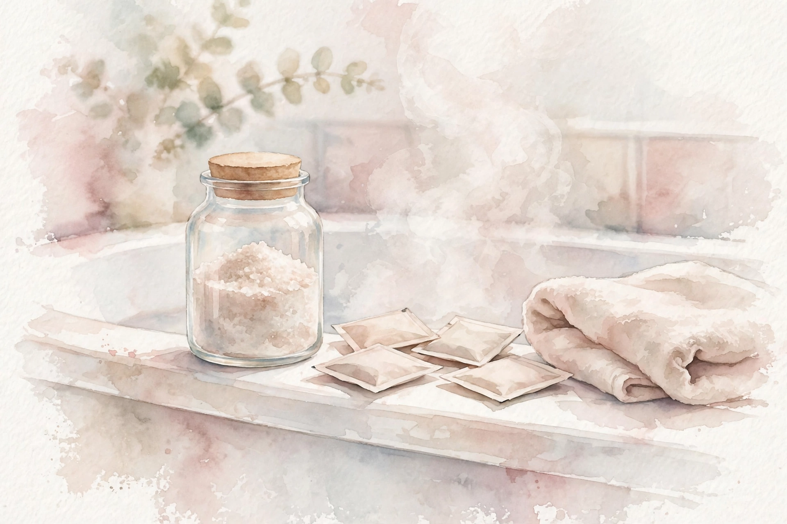
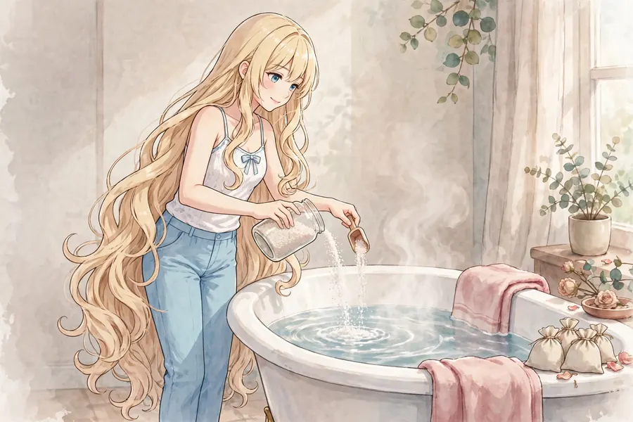

入浴剤の種類と表示の読み方

入浴剤は、ボディケアの中でも種類の多いアイテムです。色や香りの印象で選ばれがちですが、パッケージの表示には、使い方と注意の大切な情報が詰まっています。この記事では、種類の分け方と表示の読み方を整理します。
種類は、形状と区分表示で分ける
形状では、粉末タイプ、液体タイプ、固形（タブレット）タイプなどに分かれます。溶け方や入れるタイミングは形状で異なり、それぞれ使い方の表示に書かれています。また、区分表示として、医薬部外品と化粧品の別があります。区分によって表示のルールが異なるため、買う前に区分を確認しておくと、使い方の前提がそろいます。
香りの系統や色は、商品の個性として表示されています。家族で使う場合は、香りの好みが分かれる部分なので、表示の香りの説明もあわせて読みます。
使用量は「湯量あたり」で読む
使用量の表示は、「浴槽のお湯◯Lに対して◯g（キャップ◯杯）」のように、湯量を基準に書かれていることが多いです。自宅の浴槽の湯量の目安を知っておくと、表示の量を自分の浴槽に換算できます。個包装のタイプは1回分が決まっているので、量の管理は簡単です。
入れるタイミングも表示の確認点です。お湯を張ってから入れるのか、給湯しながら入れるのかは、商品によって案内が異なります。
注意表示は、浴槽と残り湯について読む
注意書きでは、浴槽の素材への配慮（木製や大理石などの浴槽では使用を避ける案内がある場合があります）と、残り湯の扱い（洗濯に使えるかどうかなど）が大切な確認点です。これらは生活に直結する情報なので、買う前に目を通しておく価値があります。
入浴剤は、形状と区分、湯量あたりの量、注意表示。この3点を押さえると、印象だけに頼らない選び方ができます。
家族で入浴剤を使う場合は、好みと表示の確認がより大切になります。香りの好みが分かれる家庭では、使う日を分ける、香りの穏やかなものを選ぶ、といった調整をします。小さい子どものいる家庭では、その入浴剤の対象や注意表示に、子どもについての案内があるかを確認してください。追い焚き機能のある浴槽では、入浴剤の使用について浴槽メーカーの注意がある場合もあります。給湯器や浴槽の取扱説明書と、入浴剤の表示の両方を確認するのが確実です。残り湯を洗濯に使う場合は、入浴剤の表示で可否を確認し、すすぎは清水を使うなどの案内にも目を通しておきましょう。
入浴剤の保管は、高温多湿を避け、個包装でないものは容器のふたをしっかり閉めるのが基本です。使い切る順番は買った日付の古いものから。棚に並べる際は、日付順に置く小さなルールで、使い忘れを防げます。

セラフィナ「入浴剤は、区分と湯量あたりの量をチェック。浴槽への注意表示も忘れずにだね」